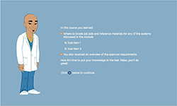
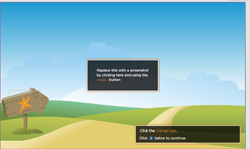
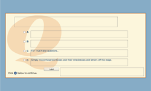
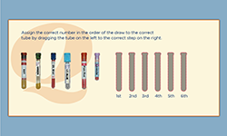
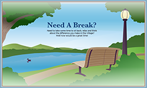
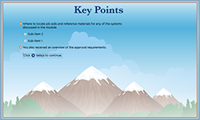
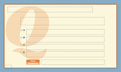

Flash Commands
The Genesis Learning Framework comes with some helpful commands to extend Flash written in jsfl. They are a snap to install and a cinch to use. They are listed here, with examples of how and when to use them.
WELCOME TEMPLATE |
|
The Welcome template is a basic "splash" introduction to your course. |
|
TEXT LESSON TEMPLATE |
|
|  | The Text Lesson template is a standard for lesson pages which contain little to no user interactivity. |
SIMULATION TEMPLATE |
|
|  | The Simulation template is for lesson pages which require student interaction. E.g., software simulations. This template contains smart library items for many common student interactions. |
QUIZ TEMPLATE |
|
|  | The Quiz template is for simple True/False and Multiple Choice quizzes. |
DRAG AND DROP TEMPLATE |
|
|  | The Drag and Drop template is for simple Drag and Drop quizzes. |
TAKE A BREAK TEMPLATE |
|
|  | The Take a Break Template is a simple page which acts as an intermission to your course. |
KEY POINTS TEMPLATE |
|
|  | The Key Points template is a review page which displays key points from your lessons in a bulleted list. |
POST TEST TEMPLATE |
|
|  | CourseBuilder makes the creation of SCORM compliant True/False and Multiple Choice tests easy by providing a simple interface for the creation of Questions and Answers as well as this pre-coded template. |